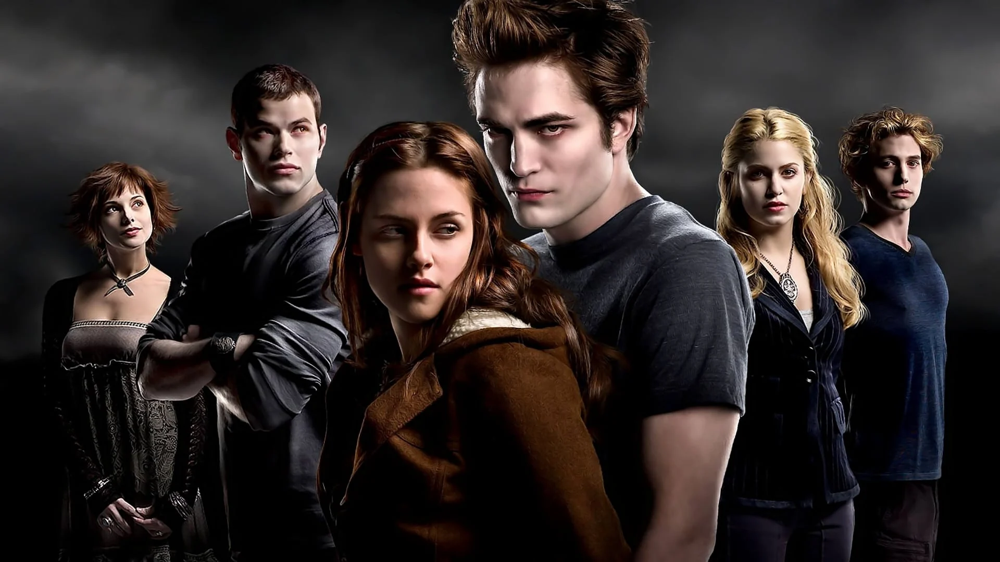
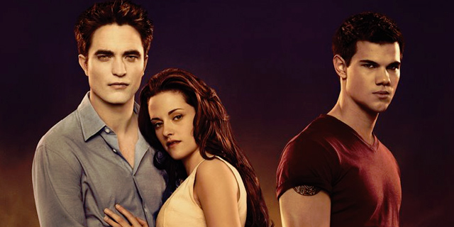
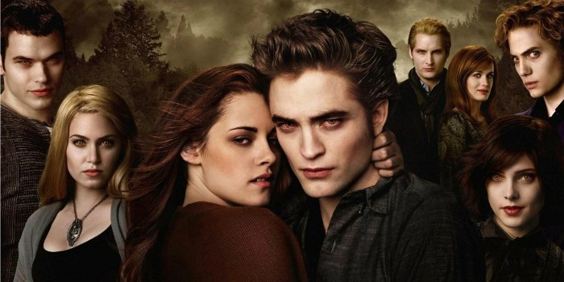

A Saga Crepusculo
A Saga Crepusculo é uma série de cinco filmes, dos gêneros fantasia e romance, lançados entre 2008 e 2012,
pela Summit Entertainment, baseados nos quatro romances da série Twilight, da autora norte-americana
Stephenie Meyer. Os filmes estrelam Kristen Stewart, Robert Pattinson e Taylor Lautner.
Crepusculo.

Sinopse:
A estudante Bella Swan conhece Edward Cullen, um belo mas misterioso adolescente.
Edward é um vampiro, cuja família não bebe sangue, e Bella, longe de ficar assustada, se envolve em um
romance perigoso com sua alma gêmea imortal.
Assita ao trailer.
Lua Nova.

Sinopse:
Depois da partida de Edward, Jacob se transforma no melhor amigo de Bella. Mas o que
ela não imagina é que Jacob também tem um segredo que mudará suas vidas repentinamente.
Assita ao trailer.
Eclipse.

Sinopse:
O perigo novamente ronda Bella com uma série de crimes misteriosos aterrorizando
Seattle e um vampiro malicioso em busca de vingança. Em meio ao tumulto, Bella precisa escolher entre seu
amor por Edward e sua amizade com Jacob, sabendo que sua decisão pode desencadear uma batalha entre vampiro
e lobisomem.
Assita ao trailer.
Amanhecer part1.

Sinopse:
O casamento de Edward e Bella, sua lua de mel e o nascimento do filho desencadeiam
uma série de acontecimentos que trará desdobramentos chocantes para Jacob.
Assita ao trailer.
Amanhecer part2.

Sinopse:
Depois do nascimento da filha de Bella e Edward, Renesmee, os Cullen reúnem
lobisomens, clãs de vampiros e outros aliados de todo o mundo para protegê-la, já que uma falsa alegação faz
com que os Volturi queiram matá-la.
Assita ao trailer.